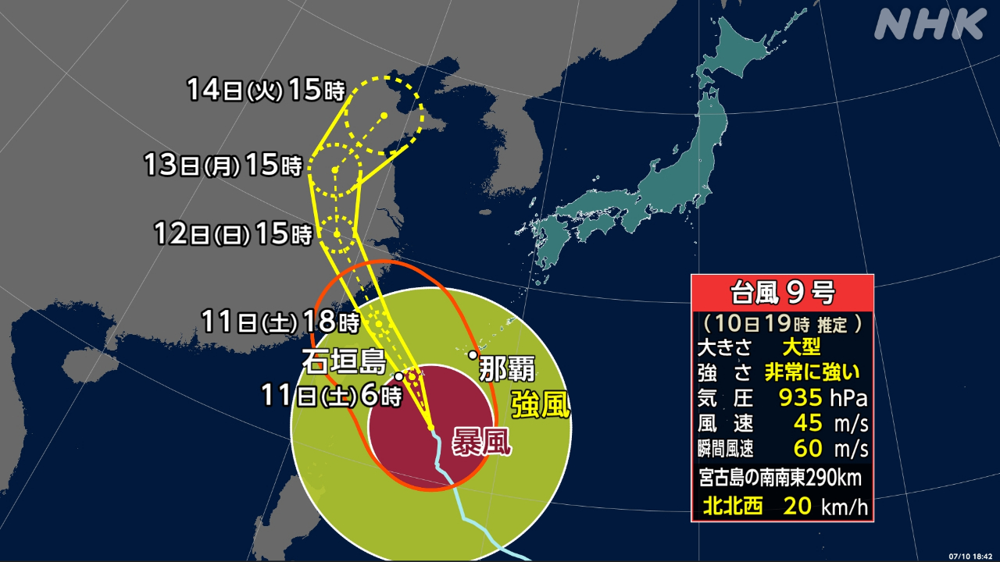
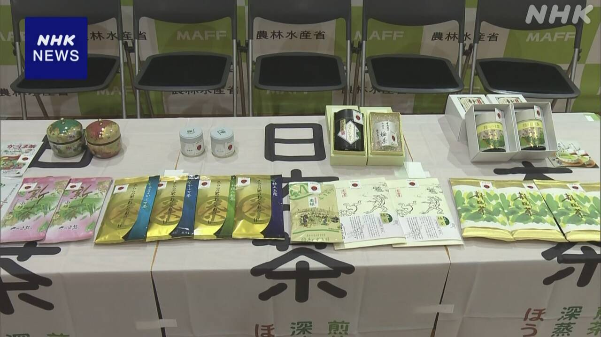
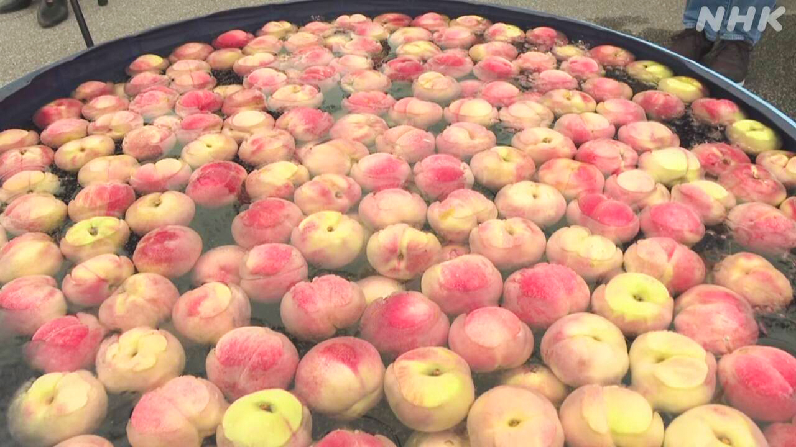

最新ニュース
1️⃣ 台風9号 沖縄県は強い風と高い波などに気をつけて

気象庁によると、台風9号が沖縄県に向かっています。
11日の夜まで宮古島や石垣島などで、とても強い風が吹きそうです。家が倒れるぐらいの強い風です。
雨も、たくさん降りそうです。海では、高い波にも気をつけてください。
10日も、たくさんの場所でとても暑くなりました。
特に九州で暑くなりました。福岡県の太宰府市で37.8℃、大分県の日田市で37.1℃になりました。東京や大阪でも30℃以上になりました。
11日も暑くなりそうです。エアコンを使って、水を十分にとってください。
2️⃣ 日本で生産したお茶だけを「日本茶」と呼ぶことを決めた

国は、日本で生産したお茶だけを「日本茶」と呼ぶことを決めました。
10日は農林水産省で、日本茶を生産するグループの代表に、「登録証」を渡す式がありました。
外国では、抹茶が人気になっています。去年、日本が外国に輸出したお茶の金額は721億円でした。前の年の2倍に増えて、今まででいちばん多くなりました。
しかし、外国で生産したのに日本のまちの名前を使ったお茶がたくさんあります。
お茶を生産する団体の人は、日本で生産したお茶だとわかるようにしたいと話しています。
3️⃣ 杉並区の区長 「家族との時間を大切にするため3週間休む」
東京、杉並区の岸本聡子区長は、7月13日から8月4日まで3週間以上、仕事を休むと言いました。
遠い所に住んでいる息子との時間を大切にしたいと話しています。
岸本区長は、自分が休んだら、職員たちも休みやすくなると考えています。
休みの間は、週に1回、オンラインで会議をする予定です。災害が起こった場合は、岸本区長が区役所に行って仕事をします。
4️⃣ 山梨県 「桃の食べ放題」のイベントが始まった

桃がおいしい季節になりました。
山梨県南アルプス市で、「桃の食べ放題」のイベントが始まりました。30分で、何個でも桃を食べることができます。
9日は、始まる前から100人ぐらいが集まっていました。 集まった人たちは、小さいプールから 桃を取って、食べていました。
長野県から来た女性は、「おいしいです。4個食べて、おなかがいっぱいになりましたが、10個食べたいです」と話していました。このイベントは、13日と14日も行います。
- 〜によると
- 〜ている / 〜でいる
- 〜まで
- 〜や〜など
- 〜そうだ
- 〜ても / 〜でも
- 〜など
- 〜くらい / 〜ぐらい
- 〜てください / 〜でください
- 〜になる
- 〜以上
- 〜だけ
- 〜こと
- 〜がある / 〜がいる
- 〜のに
- 〜し、〜し
- 〜ようにする
- 〜ように
- 〜から
- 〜から〜まで
- 〜ところ
- 〜やすい
- 〜予定
- 〜予定だ
- 〜ことができる
vebaev.github.io
Generated: 2026-07-10 11:53:00 UTC